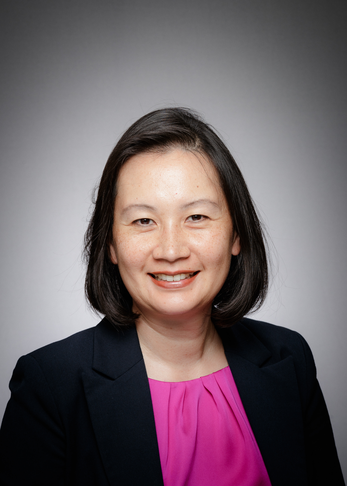

<div id="home" class="section bg-white py-5">
    <div class="container">
        <div class="row">
            <!-- Left Side: Image and Basic Info -->
            <div class="col-md-4">
                <div class="text-center">
                    
                    <h2>Fei Chiang</h2>
                    <h5>Associate Professor</h5>
                    <h5>Department of Computing and Software</h5>
                    <div class="contact-info text-left mt-3">
                        <i class="bi-geo-alt"></i> ITB 122, McMaster University
                        <br>
                        <i class="bi-geo-alt"></i> 1280 Main Street West, Hamilton, Ontario, Canada, L8S 4K1
                        <p><i class="bi-telephone"></i> +1 905-525-9140, x20103</p>
                        <p><i class="bi-envelope"></i> <a href="mailto:fchiang@mcmaster.ca">fchiang@mcmaster.ca</a></p>
                    </div>
                </div>
            </div>

            <div class="col-md-1"></div>

            <!-- Right Side: Biography and Research -->
            <div class="col-md-7">
                <p>
                    Fei Chiang is an Associate Professor in the <a href="https://www.eng.mcmaster.ca/cas"
                        target="_blank">Department of Computing and Software</a> (<a href="https://www.eng.mcmaster.ca/"
                        target="_blank">Faculty of Engineering</a>),
                    the Director of the <a href="https://datasci.cas.mcmaster.ca/" target="_blank">Data Science Research
                        Group</a>, and a Faculty Fellow at the IBM Centre for Advanced
                    Studies. She served as an inaugural Associate Director of the MacData Institute.
                    She holds four patents for her work in self-managing database systems. She has received an
                    Ontario Early Researcher Award (2018), and VLDB Distinguished Reviewer Award (2023). She received
                    her M.
                    Math from the University of Waterloo, and B.Sc and PhD degrees from the University of Toronto, all
                    in
                    Computer Science.
                </p>

                <div class="row">
                    <div class="col-md-10">
                        <h5>Research Interests</h5>
                        <ul>
                            <li>Data management</li>
                            <li>Data quality</li>
                            <li>Data profiling</li>
                            <li>Temporal graphs</li>
                            <li>Database systems</li>
                        </ul>

                        <h5>Recent News</h5>
                        <ul>
                            <li>First Recent News</li>
                            <li>Second Recent News</li>
                            <li>Third Recent News</li>
                        </ul>
                    </div>

                    <!-- Right icon -->
                    <div class="col-md-2 d-flex justify-content-center align-items-start"
                        style="margin-left: -230px; margin-top: 50px;">
                        <a href="https://datasci.cas.mcmaster.ca/" target="_blank">
                            
                        </a>
                    </div>
                </div>
            </div>
        </div>
    </div>
</div>